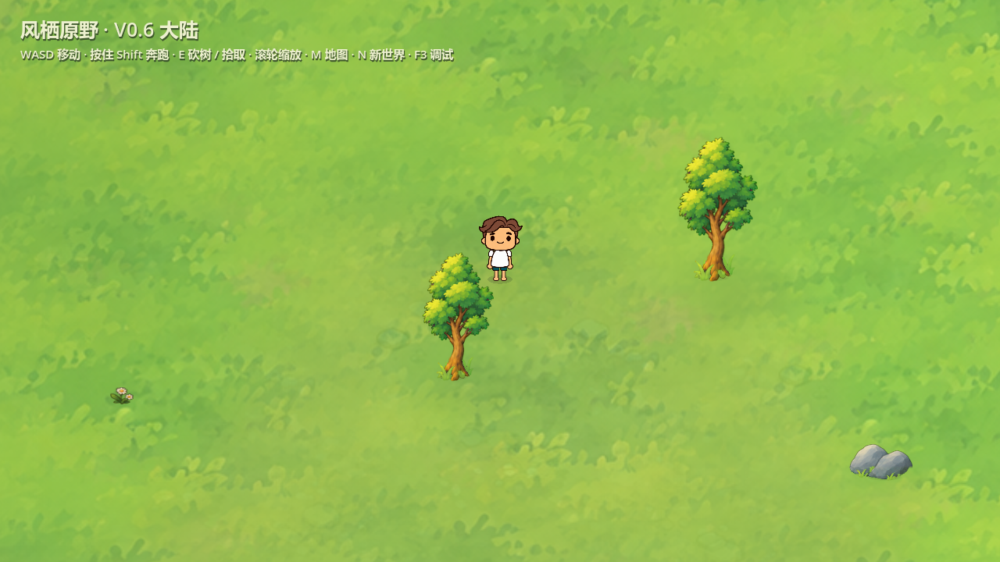
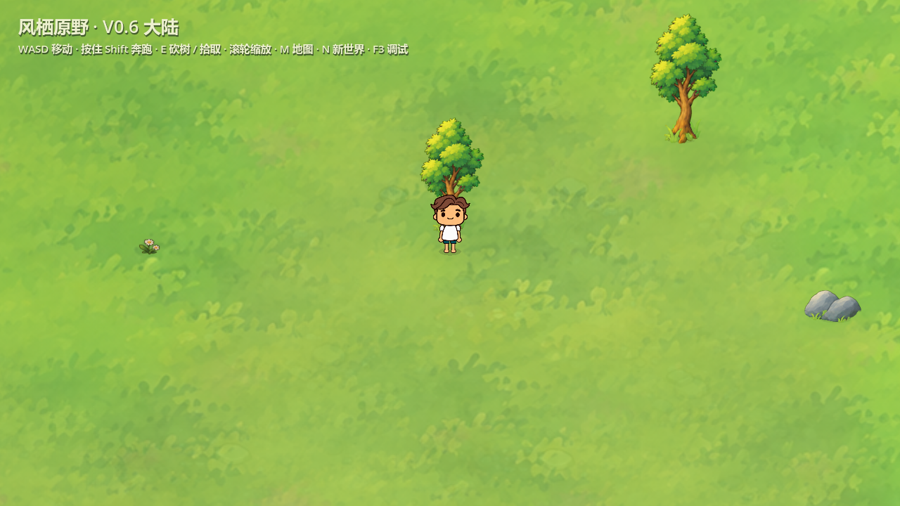
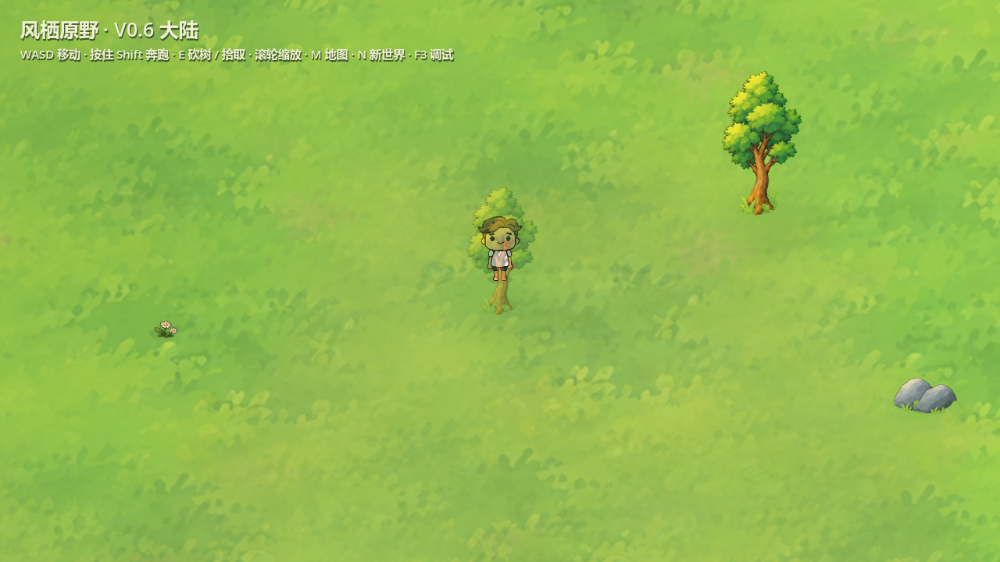
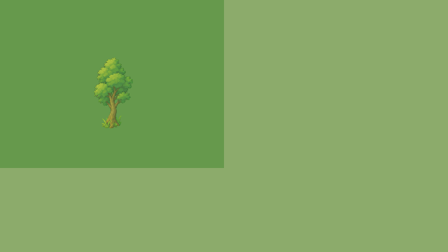
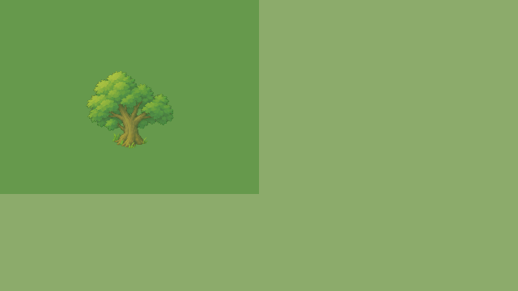
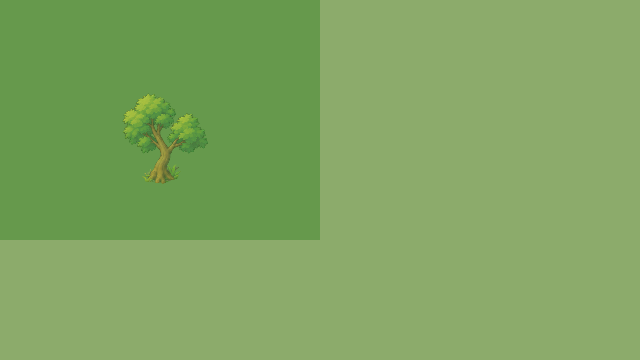

角色位于树的斜上方、没有被实际树形挡住时，树保持不透明。只有树排在角色前方、实际绘制像素遮住角色身体时，整棵树才半透明。树根、树干和树冠统一透明。
原接缝为两个半透明绘制区域重叠叠色；现在整树使用一张连续网格只绘制一次，根部仍在受击时固定。图片素材没有修改。






三树×三地表×三比例，与单张完整Sprite在同位置、同透明度的GPU输出逐像素比较：最大通道误差1/255，无重复深色条。专项225项、正式场景8项均0失败；正式场景接入回归1275项0失败。未重新生成或编辑美术图片，未新增性能承诺。